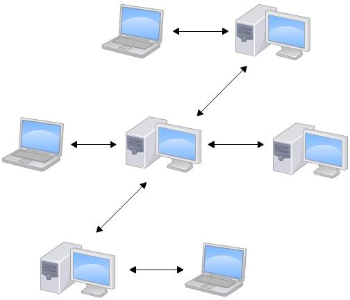

Linus 一直痛恨的 CVS 以及 SVN 都是集中式的版本控制系统，而 Git 是分布式版本控制系统。集中式和分布式版本控制系统有什么区别呢？
先说集中式版本控制系统，版本库是集中存放在中央服务器的，而干活的时候，用的都是自己的电脑，所以要先从中央服务器取得最新的版本，然后开始干活，干完活了，再把自己的活推送给中央服务器。中央服务器就好比是一个图书馆，你要改一本书，必须先从图书馆借出来，然后回到家自己改，改完了，再放回图书馆。

集中式版本控制系统最大的毛病就是必须联网才能工作，如果在局域网内还好，带宽够大，速度够快，可如果在互联网上，遇到网速慢的话，可能提交一个 10M 的文件就需要 5 分钟，这还不得把人给憋死啊。
那分布式版本控制系统与集中式版本控制系统有何不同呢？首先，分布式版本控制系统根本没有「中央服务器」，每个人的电脑上都是一个完整的版本库，这样，你工作的时候，就不需要联网了，因为版本库就在你自己的电脑上。既然每个人电脑上都有一个完整的版本库，那多个人如何协作呢？比方说你在自己电脑上改了文件 A，你的同时也在他的电脑上改了文件 A，这时，你们两之间只需把各自的修改推送给对方，就可以互相看看到对方的修改了。
和集中式版本控制系统相比，分布式版本控制系统的安全性要高很多，因为每个人电脑里都有完整的版本库，某一个人的电脑坏掉了不要紧，随便从其他人那里复制一个就可以了。而集中式版本控制系统的中央服务器要是出了问题，所有人都没法干活了。
在实际使用分布式版本控制系统的时候，其实很少人在两人之间的电脑上推送版本库的修改，因为可能你们两不在一个局域网内，两台电脑相互访问不了，也可能今天你的同事病了，他的电脑压根没有开机。因此，分布式版本控制系统通常也有一台充当「中央服务器」的电脑，但这个服务器的作用仅仅是用来方便「交换」大家的修改，没有它大家一样干活，只是交换修改不方便而已。

当然，Git 的优势不单是不必联网这么简单，后面我们还会看到 Git 极其强大的分支管理，把 SVN 等远远抛在了后面。
CVS 作为最早的开源而且免费的集中式版本控制系统，直到现在还有不少人在用。由于 CVS 自身设计的问题，会造成提交文件不完整，版本库莫名其妙损坏的情况。同样是开源而且免费的 SVN 修正了 CVS 的一些稳定性问题，是目前用得最多的集中式版本库控制系统。
除了免费的外，还有收费的集中式版本控制系统，比如 IBM 的 ClearCase（以前是 Rational 公司的，被 IBM 收购了），特点是安装比 Windows 还大，运行比蜗牛还慢，能用 ClearCase 的一般是世界 500 强，他们有个共同的特点是财大气粗，或者人傻钱多。
微软自己也有一个集中式版本控制系统叫 VSS，集成在 Visual Studio 中。由于其反人类的设计，连微软自己都不好意思用了。
分布式版本控制系统除了 Git 以及促使 Git 诞生的 BitKeeper 外，还有类似 Git 的 Mercurial 和 Bazaar 等。这些分布式版本控制系统各有特点，但最快、最简单也最流行的依然是 Git！